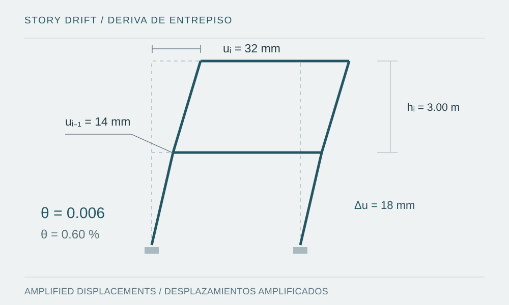

Essential checks to make mass, stiffness, drift and load-path continuity represent the building being designed.

Figure provenance
- Source
- Original vector illustration prepared for this note.
- Tool
- SVG
- Date
- 2026-10-08
- Description
- Conceptual two-level lateral-displacement diagram showing storey height and the difference between compatible floor displacements.
- Usage
- Original educational diagram; not a software screenshot or project evidence.
Introduction
Seismic design starts before analysis: configuration, vertical continuity and the distribution of mass and stiffness influence response. A building may satisfy an isolated check while retaining an inadequate load path, concentrated deformation or an incompatible connection. Review should connect global demand, local response and construction details rather than simply produce a table of periods.
The problem: represent the right building and design basis
Seismic mass must reflect occupancy and the actions being considered. The model should represent diaphragms, vertical components, connections, supports and effective stiffness using consistent assumptions. A partition, opening or discontinuity that changes the mechanism does not physically disappear because it was omitted from a model.
For Peru, the 2026 N.T. E.030 text was identified with Ministerial Resolution 183-2026-VIVIENDA [1]. Resolution 217-2026 modifies its transitional provision [2]. These are approved resolutions, not proposals. Establishing which text applies to an ongoing submission requires reviewing that provision and the project's circumstances; this note does not interpret individual administrative cases.
Development: review at three scales
At global scale, review total mass, reaction equilibrium, mode shapes and the sensitivity of periods to reasonable stiffness changes. An unusual mode shape may reveal disconnected components, unintended releases or incorrect diaphragm assignments. Torsional response requires examining plan locations and resisting paths; a single output line can hide edge demand.
At storey scale, examine how diaphragm forces reach collectors, frames or walls and eventually the foundations. AISC seismic resources describe the roles of the system and its transfer components [4]. This continuity principle does not replace material-specific rules or make every floor slab a rigid diaphragm.
At component scale, connect forces, deformations and detailing. Demands that can accommodate inelastic behavior should be distinguished from those associated with brittle mechanisms. Where nonlinear analysis is used, NIST (2017) offers a methodological framework for organizing such checks [3].
Conceptual example: displacement is not storey drift
In a single compatible response state, the lower floor moves 14 mm and the upper floor 32 mm, with a storey height of 3.00 m. Their relative displacement is 18 mm and the drift ratio is 0.006, or 0.60%. Dividing 32 mm directly by the storey height would calculate a different quantity.
This is a geometric example and does not establish compliance: the code-defined displacement, any required amplification and the applicable limit are not specified. Likewise, two independent modal or time-history maxima cannot simply be subtracted as though they necessarily occurred simultaneously.
Check data before automating drift calculations
The storey-results processor demonstrates three preliminary checks: ordered elevations with positive storey heights, declared units and matching levels between cases. Its SERVICE_A and SERVICE_B datasets are synthetic service states. Their geometric ratios are not presented as E.030 seismic demands.
Reviewing an actual seismic analysis also requires defining the diaphragm location, direction, combination procedure and transformation required by the applicable code. That decision lies outside the simplified CSV contract. Preserving this distinction prevents correct arithmetic from producing an incorrect code conclusion.
Common mistakes
- Adjusting mass to obtain an expected period instead of investigating the discrepancy.
- Treating base shear as the sole indicator without reviewing its distribution, torsion or drift concentrations.
- Changing code editions without recording applicability, parameters and affected criteria.
- Mistaking a results envelope for a simultaneous equilibrium state when designing a connection.
Conclusion and scope
A clear design record lets a reviewer follow each decision from configuration to detailing and verification. It should identify the code text, its applicability and the review date. This note provides educational criteria and a geometric calculation, not acceptance limits or a construction-ready design. Reviewed on 8 October 2026.
Sources and references
- MVCS — Ministerial Resolution 183-2026-VIVIENDA, amendment to N.T. E.030 and the 2026 E.030 text; resolution of 28 April 2026
Resolution approved on 28 April 2026 and its official annexes. Applicability is reviewed together with its amended transitional provision.
- MVCS — Ministerial Resolution 217-2026-VIVIENDA, amendment to the transitional provision of Resolution 183-2026; resolution of 2 June 2026
Resolution of 2 June 2026 amending the transitional provision of Resolution 183-2026-VIVIENDA; it is not presented as another technical edition of E.030.
- NIST GCR 17-917-46v1 — Guidelines for Nonlinear Structural Analysis for Design of Buildings, Part I: General (2017)
2017 methodological guide, Part I. Supports the organization and review of nonlinear analysis; it does not replace the code adopted for a project.
- AISC — Seismic: official resources on systems, diaphragms and collectors (accessed 2026-10-08)
Official resources on systems and force-transfer components. They support the load-path discussion but do not replace applicable standards.